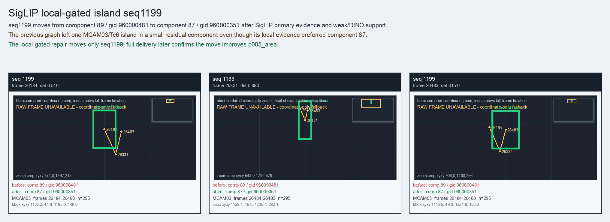

SigLIP local-gated island seq1199
seq1199 moves from component 89 / gid 960000481 to component 87 / gid 960000351 after SigLIP primary evidence and weak/DINO support.
Before
component 89, gid 960000481, component_size 52
component 89, gid 960000481, component_size 52
After
component 87, gid 960000351, component_size 146, decision_status subpart_reassign
component 87, gid 960000351, component_size 146, decision_status subpart_reassign
Evidence
target_sim=0.6939, target_margin=0.1593, source_rest_margin=0.6628
Raw frame
unavailable_coordinate_fallback
target_sim=0.6939, target_margin=0.1593, source_rest_margin=0.6628
Raw frame
unavailable_coordinate_fallback
Failure and fix
Old failure: The previous graph left one MCAM03/Tc6 island in a small residual component even though its local evidence preferred component 87.
New implementation: The local-gated repair moves only seq1199; full delivery later confirms the move improves p005_area.
BBox evidence

Moved tracklets
| seq | video | gid | component | frames | dets |
|---|---|---|---|---|---|
| 1199 | vlincs_MS01_MC0001_MCAM03_2024-03-Tc6 | 960000481 -> 960000351 | 89 -> 87 | 26184-26483 | 295 |